Assistive lighting that is also art.
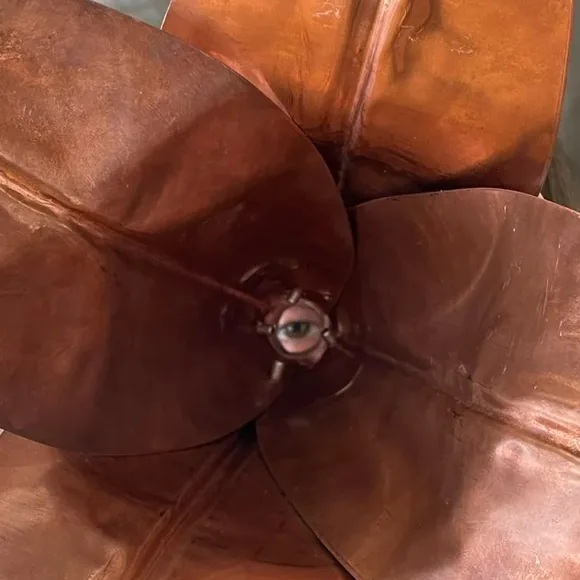
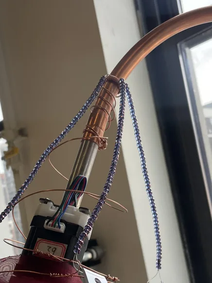
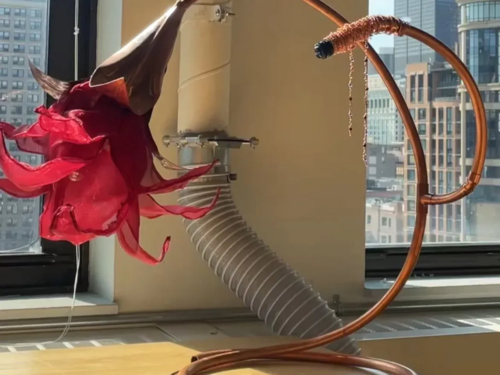
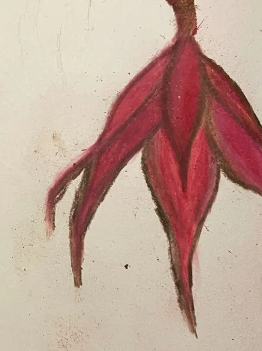
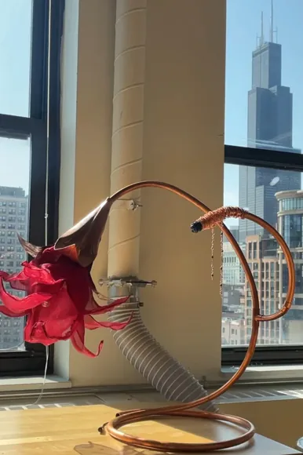
The world of the Sun-Drop Flower: my sketches, the build, the finished lamp and its palette.
My mom has arthritis, and some days the pain in her hands makes turning on a lamp hard. So I built her a robotic lamp with a motion sensor. A small wave of the hand turns it on, no switch needed.
Good lighting helps people with mobility challenges stay safe and independent at home.
It should be easy to use, with features like motion sensors and voice control. It should also look good enough to make a room feel welcoming. Most assistive lighting only does the first part.
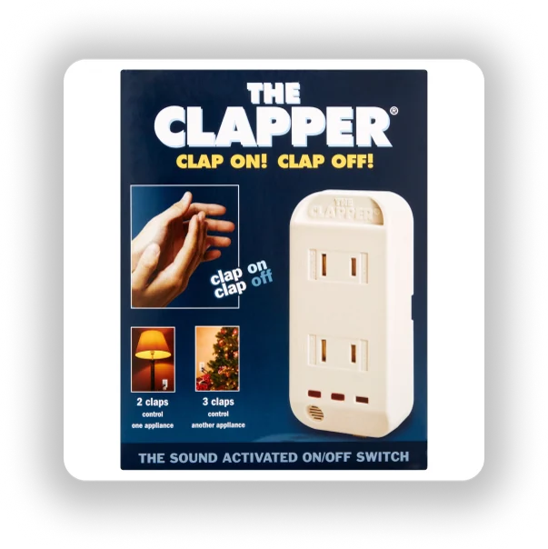
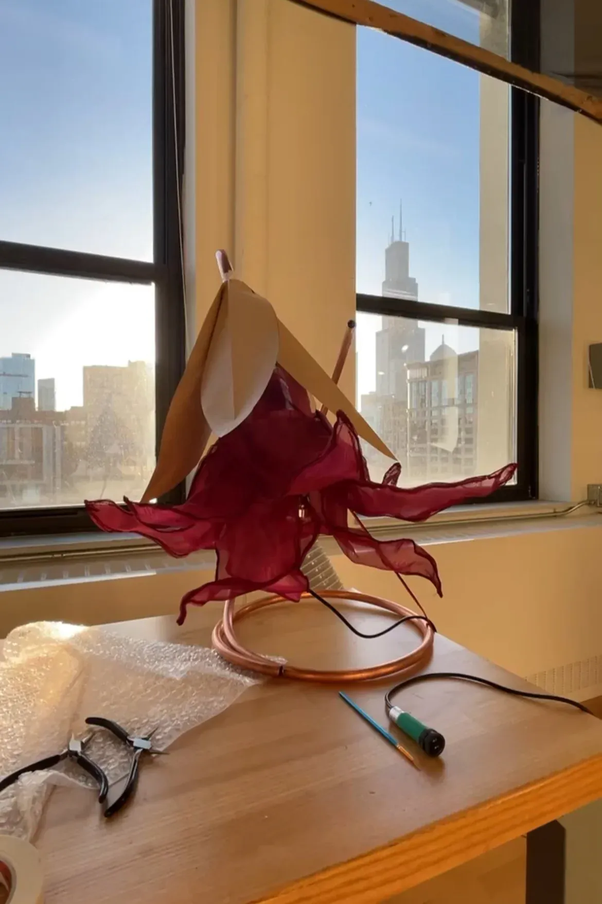
I interviewed a senior client with mobility challenges about their needs, their tastes, and where everyday tasks and assistive tech let them down.
Eleanor Hayes is my persona. She's 68, a retired interior designer in a downtown apartment. She hosts small gatherings, loves decorating and puts style first in everything she owns. She's fine with technology but wants it simple. Arthritis makes twisting a lamp knob or pulling a light string hard.
A beautiful home that still works for her. Products that add comfort without giving up design, and tech that's easy to use and fits her style.
Most assistive devices are clunky. Practical lighting tends to look industrial or plain. Finding something both useful and beautiful is hard.
"It's important for me to find solutions that blend functionality with elegance."
Eleanor Hayes, my persona
Joseph Enterprises, the maker of the Clapper, Lutron and iHome all offer similar features. None of them offered a choice that's nice to look at.
That's where the Sun-Drop Flower stands apart. It puts artistic design and assistive features in the same object.
I took my cues from nature: fabric petals on a copper stem. I followed the Double Diamond process from the first sketch to the finished lamp.
I sewed the petals on a sewing machine and 3D printed a housing for the electronics. Copper sheet and wire became the stem and the motor cover. I soldered the circuit and programmed the light and the movement on an Arduino, and kept my mood boards and notes in design software.
Julian Grubb helped me build it. Together we worked out how to hide the electronics and balance the weight. After a few rounds, the lamp matched what I'd pictured.
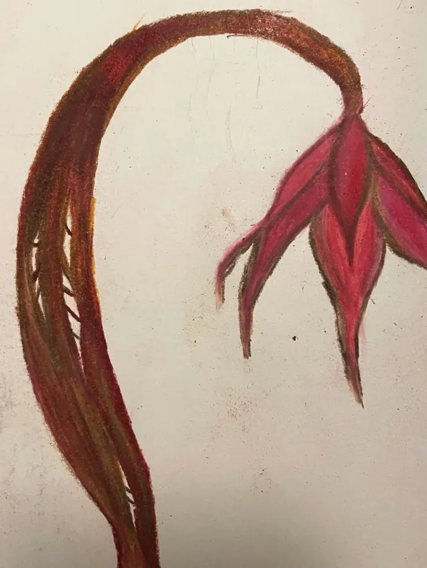
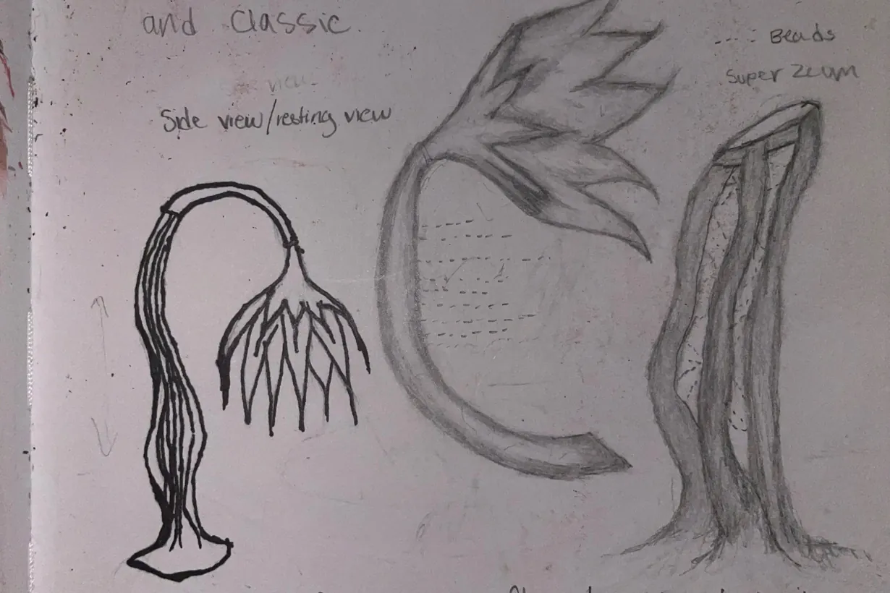
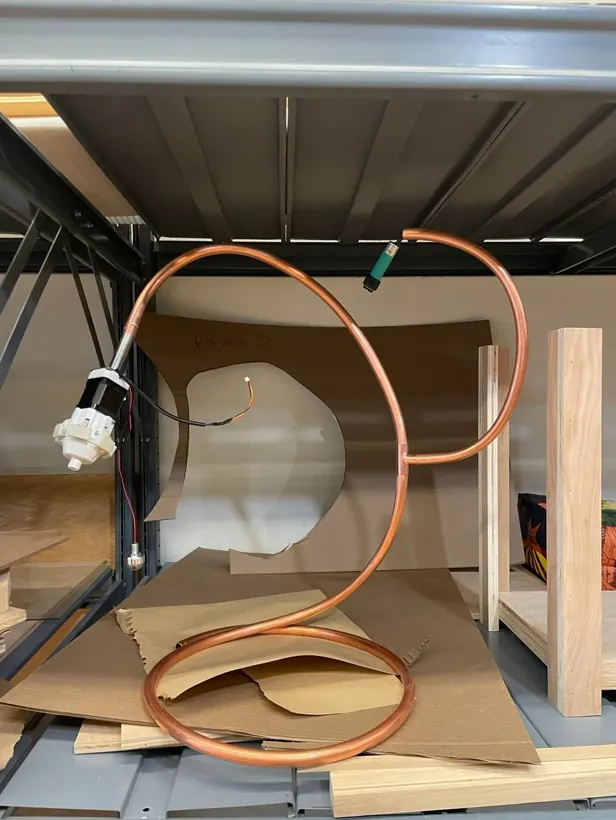
The hardest part was the weight of the copper hood. It had to sit steady and balanced without losing the lamp's elegant line.
It took several rounds. After testing different approaches, we found a way to support the hood that kept the lamp working and looking the way it should.
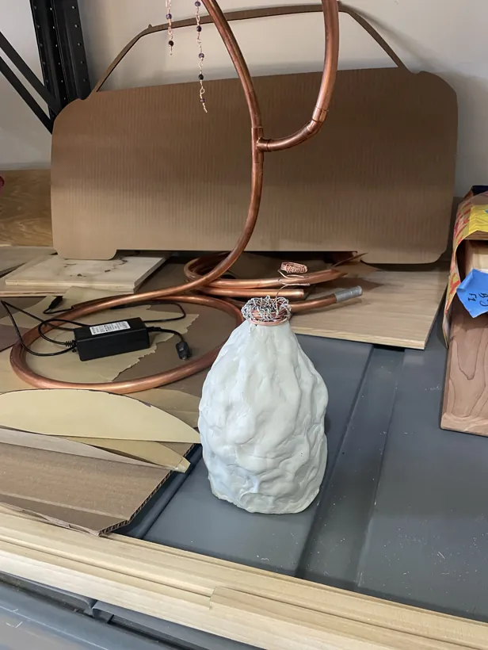
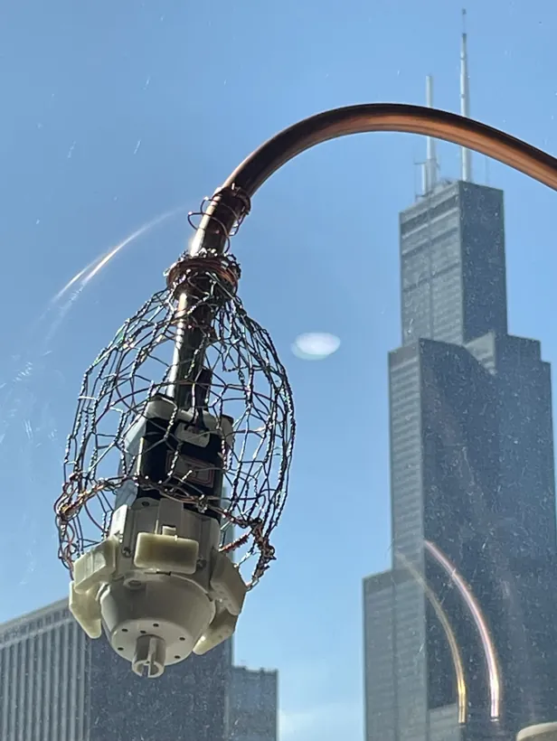
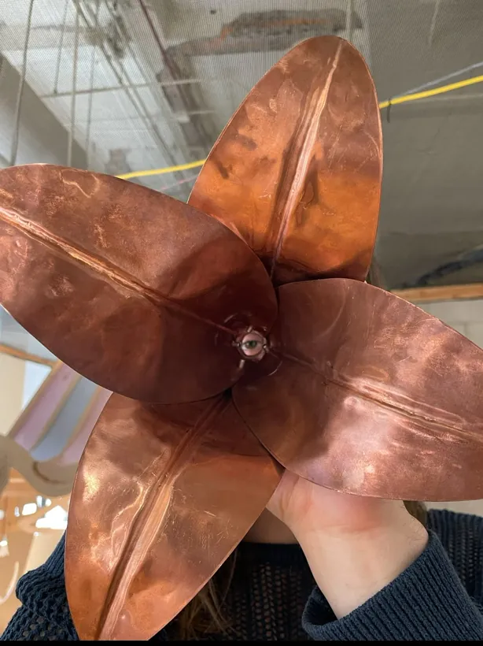
The Sun-Drop Flower merges art and function. It's dynamic, accessible lighting for people with mobility challenges that makes a living space easier to use and lovelier to look at.
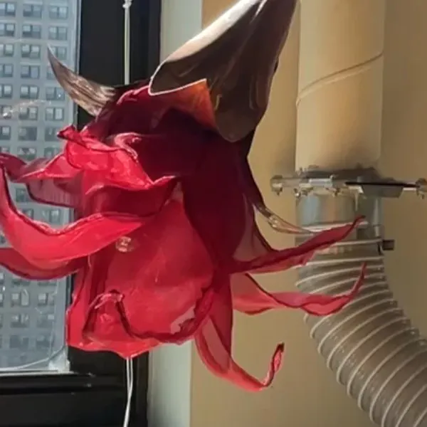
Next Project
Project 808 →